ИЗУЧЕНИЕ МЕЛИЗМОВ В ПРОИЗВЕДЕНИЯХ КОМПОЗИТОРОВ XVIII ВЕКА ПО ТРАКТАТУ
К.Ф.Э. БАХА «ОПЫТ ИСТИННОГО ИСКУССТВА КЛАВИРНОЙ ИГРЫ»
Аннотация
Методическая разработка посвящена изучению мелизмов (далее будут
именоваться украшениями) в произведениях композиторов XVIII века по
трактату К. Ф. Э. Баха «Опыт истинного искусства клавирной игры».
Трактат взят за основу не случайно, поскольку К. Ф. Э. Бах является
одним из важнейших практиков и теоретиков клавирного исполнительства,
создателем определенной исполнительской школы, продолжателями которой
являлись по их собственным утверждениям Й. Гайдн, В. А. Моцарт, Л. Ван
Бетховен. В работе рассматриваются различные аспекты клавирного
исполнительства, касающиеся украшений, аппликатуры, исполнения
произведений в целом. Методическая разработка может быть полезна в
процессе обучения, поскольку произведения указанного периода времени
занимают значительную часть педагогического репертуара
междисциплинарного курса «Дополнительный инструмент – фортепиано».
Особенно работа будет полезна для изучения обучающимся, поскольку
автор старался наиболее доступным языком донести основные законы и
традиции исполнительства XVIIIвека, заручившись поддержкой
несомненного авторитета в этой области искусства – Карла Филиппа
Эммануэля Баха.
Введение
Цель методической разработки:
Внимательно познакомить обучающихся с мелизмами (украшениями),
встречающимися в произведениях композиторов XVIII века и традициями
исполнительства в целом.
Задачи методической разработки:
Изучить законы, традиции и способы исполнения мелизмов (украшений),
опираясь на опыт одного из основателей школы исполнительства на
клавишных инструментах Карла Филиппа Эммануэля Баха.
Формы работы:
- индивидуальная
- самостоятельная
Трактат Карла Филиппа Эммануила Баха «Опыт истинного искусства
клавирной игры является одним из важнейших трудов 18 века. Это своего
рода исполнительская школа, в которой с критической стороны
рассматриваются традиции и новейшие идеалы – музыкальные,
эстетические, технические. Создавая трактат, К. Ф. Э. Бах во многом
опирается на педагогический опыт собственного отца – Иоганна
Себастьяна Баха. В этом нет ничего удивительного, ведь в собственной
автобиографии К. Ф. Э. Бах пишет: «В композиции и клавирной игре я не
имел никакого иного учителя, кроме моего отца». Трактат посвящен
непосредственно практике исполнения на клавире (обозначение клавишных
инструментов того времени, исключая орган) и во многом способен
сформировать эстетический вкус исполнителя. Трактат получил весьма
широкое распространение и был популярен, при помощи этого труда было
воспитано определенное поколение музыкантов. Об этом могут
свидетельствовать слова Йозефа Гайдна, считавшего трактат К. Ф. Э.
Баха важнейшей исполнительской школой. Людвиг Ван Бетховен
настоятельно рекомендовал новым ученикам приходить с первых же занятий
вместе с этой книгой. По свидетельствам Карла Черни (одного из
учеников Л. Ван Бетховена) его наставник в процессе обучения четко
следовал трактату К. Ф. Э. Баха и требовал исполнения пьес, написанных
Бахом в дополнение к трактату.
При жизни композитора было продано до полутора тысяч экземпляров
трактата, что так же говорит о важности исследования, проведенного
Бахом. В данной работе будет рассмотрена первая книга трактата К. Ф.
Э. Баха, посвященная вопросам аппликатуры, украшений и исполнительства
на клавишных инструментах в целом. Так же затрагиваются особенности
инструментов, наиболее распространенных в те времена.
Исполнительство на клавире.
В предисловии к своему трактату К. Ф. Э. Бах справедливо отмечает, что
в его времена требования к исполнителю на клавишных инструментах были
чрезвычайно высоки: хороший исполнитель обязан уметь исполнять
произведения различных стилей, во всех возможных тональностях, с
легкостью и без ошибок транспонируя сочинения из одной тональности в
другую; должен превосходно уметь читать с листа произведения любой
сложности, и не всегда написанные для собственно клавишных
инструментов. Все эти умения необходимо применять независимо от того,
насколько хороший и подходящий инструмент достался исполнителю,
пригоден ли он к игре в целом. Так же во времена Баха настоящий
исполнитель на клавишных инструментах был обязан уметь свободно
импровизировать на заданную тему, а также в любых стилях; читать
генерал-бас (цифрованный бас) любой сложности и подробности,
оглядываясь на гармонию, звучащую в других голосах, укрепляя
совместное звучание в ансамблевой музыке и еще много другого.
Наверное, за исключением последнего абзаца, все подобные навыки
ожидаются и от современных исполнителей на фортепиано. Лишь
необходимость импровизации осталась приоритетом для исполнителей,
занимающимися старинной ансамблевой музыкой как раз времен К. Ф. Э.
Баха и ранее.
Все эти требования говорят лишь о чрезвычайной важности клавишных
инструментов для музыкального искусства. Важным достоинством клавишных
инструментов является возможность совместить свойства нескольких
инструментов в одном, возможность пользоваться полнозвучными
гармониями. Клавишные инструменты, таким образом, оказываются наиболее
универсальными и совершенными, а потому всегда находят преданных
поклонников, не пугающихся трудностями в обучении. Согласно
авторитетному мнению К. Ф. Э. Баха, хороший исполнитель должен
обладать многими достоинствами, и не самое важное из них – проворство.
Фортепиано, как и другие клавишные инструменты, позволяет исполнителю
(конечно при должном умении, трудолюбии и согласно способностям) ловко
и быстро играть пассажи, трели, арпеджио, различные двойные ноты,
применять перекрещивания рук, брать широкие интервалы и полнозвучные
аккорды из 5 – 6 звуков каждой рукой. Но важнейшим достоинством
исполнителя может быть лишь способность волновать душу слушателя, не
перегружая его слух ничем чрезмерным. К. Ф. Э. Бах подчеркивает
необходимость развитого интеллекта у исполнителя, способного исполнять
произведения согласно его разуму.
Качественное исполнение, по мнению композитора, во многом зависит от
того, насколько вовремя своевременно звучат ноты, правильно и уместно
играются украшения, с подходящим ли прикосновением играется
произведение. Все эти аспекты исполнения должны быть близки содержанию
пьесы. О большинстве из этих вопросов пойдет речь в дальнейших
разделах настоящей работы. Так же, довольно важно знать и понимать
инструмент, оказавшийся перед исполнителем. И здесь К. Ф. Э. Бах имеет
в виду не только качество конкретного фортепиано, но и в целом, на
каком клавишном инструменте предполагается исполнение музыкального
произведения: на клавикорде, на клавесине или на молоточковом
фортепиано. Конечно, эта тема не имеет практического смысла в рамках
данной работы, но нельзя не принять во внимание этот совет композитора
– представлять, что за инструмент перед тобой, ведь каждый, даже не
опытный исполнитель, уже в курсе, что все фортепиано совершенно
различны по своей отзывчивости, по своему тембру, по диапазону
динамических возможностей.
Часто фортепиано не может быть полнозвучным, пока в прикосновении нет
опоры, и столь же часто инструмент требует к себе очень бережного и
осторожного (но не скованного) прикосновения. Эта разность в
динамическом диапазоне фортепиано так же естественно влияет и на выбор
темпов исполняемых произведений. Во времена К. Ф. Э. Баха клавишные
инструменты (в том числе и фортепиано) не обладали значительной
протяженностью звука. В связи с этим композитор в собственном труде
предостерегал исполнителей от чрезмерностей в медленных темпах, чтобы
избежать одновременно пустоты звучания, и пестроты из-за множества
мелких нот, которыми в случае Adagioпришлось бы «украшать» фактуру
произведения. При этом любые уместные украшения должны быть исполнены
таким образом, чтобы слушатель считал, что слышит лишь простые ноты.
Как ни удивительно, но вопрос динамики так же затрагивается в труде
композитора. Ей отводится роль передачи аффектов, вложенных в характер
произведения, и отмечается, что градации динамики, указанные в нотном
тексте произведений, могут отличаться от композитора к композитору.
Положения pianoи forteмогут меняться местами при повторении одной и
той же темы, особенно если тема написана в другой тональности или же в
другой гармонизации. Таким образом, можно отметить условность
некоторых динамических обозначений. Но стоит помнить, что, как
правило, диссонансы должны исполняться с большей опорой и большей
силой, чем консонансы.
Говоря об исполнительстве в целом, К. Ф. Э. Бах упоминает еще об одной
необходимой способности исполнителя: он должен хорошо улавливать
настроение самих слушателей, насколько они подготовлены к
прослушиванию исполняемых произведений, насколько музыка понятна
слушателям. Важную роль играет также и аудитория, в которой происходит
исполнение, её акустические свойства и особенности. Всё это в целом
должно влиять на нюансы трактовки, касающиеся и выбора темпов, и
характера прикосновения (туше), и на многое другое.
Позволю себе привести здесь две объемные цитаты К. Ф. Э. Баха об
основах исполнительства на клавирах: «Истинное искусство клавирной
игры основывается главным образом на трех вещах, столь тесно связанных
между собою, что ни одна из них не может и не должна существовать без
другой: это аппликатура, верные украшения и хорошее исполнение…».
«…Если эти три вещи совершенно неизвестны и, следовательно,
отсутствуют [в исполнении], чаще всего можно слышать [таких]
клавиристов, которые после мучительных усилий наконец выучились тому,
как сделать звук клавира отвратительным для просвещенного слушателя. В
игре их загублена вся округлость, ясность и естественность, вместо них
есть лишь колочение по клавишам, громыхание и спотыкания. Меж тем как
на прочих инструментах выучились петь [играть певуче], лишь клавир не
преуспевает в этом и должен вместо нескольких протянутых нот возиться
с множеством пестрых фигур; поэтому уже считают страшным для клавира
сыграть нечто медленное и певучее и невозможным ни связать одни звук с
другим, ни разделить их; полагают, что этот инструмент надо терпеть
лишь как неизбежное зло аккомпанемента. Эти обвинения столь
неосновательны и противоречивы, что являются несомненным признаком
плохого искусства клавирной игры…» К. Ф. Э. Бах также отмечает и
другие недостатки, что можно встретить у исполнителей, например
неверная постановка рук и труднообъяснимая аппликатура, что обычно
влечет за собой заметное ограничение исполнительских возможностей. В
данной работе будут рассмотрены и эти вопросы в последующих разделах.
Аппликатура
По скромному мнению автора данной работы, аппликатурные принципы
исполнительства на клавишных инструментах, которые можно без оговорок
назвать современными нам, сложились приблизительно к началу XIXвека, в
годы творческой активности Л. Ван Бетховена. Я сужу по фактуре его
произведений, ощутимо более сложной и насыщенной, чем у его
предшественников. И одни из важнейших аппликатурных принципов
следующие: принципиальное использование большого (первого) пальца
наравне с остальными; подкладывание первого пальца под ладонь для
смены позиции при гаммообразном движении и по звукам аккордов вверх и
вниз, то есть во всех удобных случаях; практически полный отказ от
перекладывания остальных пальцев друг над другом при движении в обоих
направлениях (в определенных ситуациях всё же допускается, что не
является противоречием), использование пятого пальца наравне с
остальными, применение большого (первого) пальца на черных клавишах. В
собственной педагогической практике я убежден даже в главенствующей
роли большого пальца, как основы всей позиции руки на клавиатуре, но
не спешу навязывать своё мнение, мне будет достаточно признания этого
пальца как равнозначного остальным.
К. Ф. Э. Бах создает свой трактат в те времена, когда происходит
постепенный переход от устаревших аппликатурных норм к наиболее
современным. В частности, роль большого пальца была сравнительно
невелика в исполнительстве, особое значение ему придавали очень
немногие музыканты (среди которых тем не менее был отец К. Ф. Э. Баха
– Иоганн Себастьян Бах). Позволю себе ещё несколько цитат из трактата:
«…Так как верное употребление пальцев до сих пор остается еще
неизвестным, как род тайны, открытой лишь немногим, то нет сомнений в
том, что изучение аппликатуры - коварная тропинка, на которой легко
заблудиться». «…На клавире по большей части можно играть и с неверной
аппликатурой, пусть и с невероятными ухищрениями и неискусно, в то
время как на других инструментах малейшее неверное расположение
пальцев по большей части обнаруживается вследствие очевидности
невозможности играть то, что следует…».
Из приведенных примеров становится ясно, что споры о верной
аппликатуре ещё не утихли, ещё часто используются перекладывания
пальцев (взамен более удобного подкладывания большого пальца), редко
используется мизинец, только в местах, требующих широкой растяжки.
Такой постановке руки на клавиатуре способствовали и объективные
причины. Дело в том, что клавиши клавесина и клавикорда (а также
первых фортепиано) были заметно короче, чем на современных
инструментах. По этой причине большой палец из-за своего строения
оказывался за пределами клавиатуры, у многих исполнителей даже свисая
с края клавиатуры. Постепенно, возможно под давлением самих
исполнителей, мастера новых инструментов постепенно увеличивают длину
клавиш (главным образом на новых фортепиано), что способствует более
естественной смене постановки руки и аппликатурных принципов.
Одно из преимуществ клавира в сравнении с другими инструментами, по
мнению К. Ф. Э. Баха –возможность исполнения произведений во всех
двадцати четырех тональностях. Это уже было доказано И. С. Бахом,
создавшим два тома Прелюдий и Фуг во всех тональностях. Естественным
образом это повлияло и на развитие аппликатуры – в трактате
прослеживается синтез старых и новых принципов. Исполнителю
предлагается использовать как подкладывание большого пальца, так и
перекладывание остальных, в зависимости от обстоятельств. Гораздо
больше выбора аппликатурных вариантов у исполнителя появляется в
«простых» тональностях, где меньше альтерированных звуков, отчего
подбор правильной аппликатуры в них оказывается более сложным, по
мнению композитора. В примерах аппликатуры для таких тональностей
можно часто встретить перекладывание пальцев, и довольно редко
встречается использование мизинца. Я предлагаю не заострять на этом
внимание и не принимать к исполнению эти пожелания автора трактата,
поскольку развитие исполнительства не стояло на месте даже во времена
К. Ф. Э. Баха. При этом все остальные предложения и советы композитора
вполне соответствуют современным взглядам на аппликатурные принципы в
исполнительстве.
Украшения в произведениях К. Ф. Э. Баха и его современников
По мнению К. Ф. Э. Баха и большинства его современников, украшения в
музыке несомненно необходимы. Об этом свидетельствует частота их
появления в музыке XVIIIвека и ранее. Само явление украшения служит
для того, чтобы сделать ноты еще привлекательнее, иногда для большей
связности между нотами, часто для привлечения особого внимания к
определенной ноте, иногда для передачи аффекта пьесы, на клавишных
инструментах зачастую для удлинения основной ноты, ввиду ограниченной
длительности звука на клавишных инструментах. Зачастую, выбор
украшения и его положение в пьесе предоставлено самому исполнителю, в
таких случаях некоторые композиторы полагаются на образованность
исполнителя и его художественный вкус. При этом К. Ф. Э. Бах
подчеркивает, что украшения могут как обогатить фактуру, придать
определенную окраску звучанию произведения, будь то радостную или
печальную, так и принести вред при неумелом использовании. Сам
композитор довольно подробно и внимательно проставлял всевозможные
виды украшений в тексте своих произведений.
В тексте трактата можно прочесть о теории аффектов, основой которой
было мнение, что музыка является чем-то большим, чем набор звуков, ей
подвластно выражение многих чувств. Несомненно, так и в
действительности – недостаточно сыграть произведение просто согласно
нотному тексту, даже порой безукоризненно (хотя и это – уже не малое
достижение). Исполнителю должно быть подвластно управление страстями в
музыке, изображаемыми в ней аффектами. Исполнитель, обладающий
определенным мастерством, способен добавлять украшения на свое
усмотрение, а также, разобравшись с аффектом произведения, может
обойтись и вовсе без них. Мастерство исполнителя при этом выражается в
том, насколько искусно он способен переходить от пламенной,
взволнованной манеры игры к певучей, невинной, печальной манере,
воплощая определенный аффект.
Украшения при этом используются, главным образом, в умеренных по
движению пьесах, и чаще на длинных, чем на коротких нотах. Так можно
подчеркнуть наиболее важные моменты в пьесе, придать определенную
важность и смысловые акценты нотам. Особо важно применять украшения
там, где в пьесе повторяется что-то, что уже ранее звучало. Украшения,
выписанные не значком, а мелкими нотами, всегда играются на доле
следующей за ними ноты, от предыдущей ноты отнимать время для
исполнения украшения нельзя. Так же и бас, и остальные голоса должны
быть взяты вместе с первой нотой украшения. В трактате «Опыт истинного
искусства клавирной игры» К. Ф. Э. Бах подробно описывает варианты
исполнения большинства украшений, которые могли бы повстречаться
исполнителю в нотном тексте его произведений.
1. Форшлаг
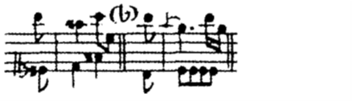
К. Ф. Э. Бах считает форшлаг одним из важнейших украшений, поскольку
форшлаг обогащает и совершенствует и гармонию, и мелодическую линию,
поскольку превосходно связывает между собой ноты мелодии. Также
форшлаг укорачивает длинные звуки, не давая им преждевременно
угаснуть, ведь мы помним об ограниченности длины звучания нот на
клавишных инструментах. Часто форшлаг повторяет предыдущий звук, что
так же делает мелодию более привлекательной (но при условии искусного
исполнителя). В гармоническую и ритмическую структуру музыкального
фрагмента форшлаг может добавить диссонансы и соответственно следующие
за ними консонансы, а также синкопы.
Нотация форшлага следующая: наиболее часто в современных изданиях он
выписываться в виде мелких нот с определенными длительностями, которые
следует вычесть из длительности основной ноты. Длительность главной
ноты при этом сокращается ровно на длительность форшлага. Таким
образом украшение всегда исполняется в долю, на которой написана
основная нота. Соответственно, опора на форшлаг сильнее, чем на
последующий звук, который именуется в таком случае разрешением. Задача
форшлага – связать ноты, отчего он всегда объединен с последующими
нотами лигой.
2. Трель
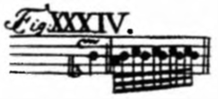
Трель встречается в пьесах с плавным движением и в оживленных
произведениях, при скачках и на ферматах. В произведениях композиторов
XVIIIвека трель представлена довольно разнообразно. Довольно часто в
современных изданиях даются подробные расшифровки, как следует начать
трель, насколько мелкие длительности необходимо применить, как
закончить трель, особенно, если трель обозначена таким образом, как в
примере выше. Здесь стоит обратить внимание, что трели во времена К.
Ф. Э. Баха обозначались тем знаком, который мы в современной
педагогике определяем как мордент (без перечеркивающей линии). Как
только исполнитель это сможет понять, для него перестанет быть
загадкой исполнение одновременно и трели, и мордента. Различие в их
исполнении будет только в количестве витков трели – мордент по своей
сути оказывается просто короткой трелью. После того, как исполнитель
разберется с понятием трели и мордента, встретив в тексте произведения
такой знак он сможет сам выбрать, исполнить ли ему длинную трель или
мордент (короткую трель).
Теперь несколько слов о правилах исполнения трели: начинаться она
должна на секунду выше основного звука. Иногда это обозначается
форшлагом перед нотой с трелью, иногда нет, но на правило не влияет. В
конце трели могут добавляться несколько мелких нот – нахшлаг, иногда
он может быть записан нотами, иногда может быть прибавлен к самому
значку трели.
По мнению К. Ф. Э. Баха трель – одно из самых сложных украшений по
исполнению. Звуки трели должны быть ровными, равнозначными, темп трели
должен быть соразмерен характеру произведения (но предпочтительнее
оживленная трель). Для успешного освоения этого важного элемента
клавирного исполнительства, несомненно, необходимы упражнения. Трель
изначально должна играться медленно, ровно, мышцы абсолютно свободны.
Особо отмечу, что звуки трели (как и остальных видов украшений) должны
выглядеть такими же мелодическими элементами, как и звуки мелодии, а
соответственно быть максимально равнозначными друг другу. Достичь
подобного совершенства можно только контролируя каждое нажатие
клавиши, потому я подчеркиваю, что разучивание трели необходимо
начинать с медленного темпа. При увеличении темпа исполнения трели
меняется только темп – ровность звуков, контроль над каждым нажатием и
свобода мышц руки должны сохраняться.
Упражнения на трелях необходимо совершать всеми пальцами, это только
улучшает технические возможности исполнительского аппарата, но только
при условии правильного разучивания. Аппликатура трелей известна,
может быть любой, удобной или зависящей от обстоятельств. Стоит
избегать трели одновременно третьим и четвертым пальцами, и четвертым
с пятым, ввиду физиологических особенностей кисти. Все остальные
варианты вполне возможны.
3. Группетто
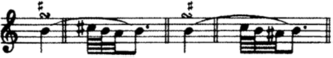
Группетто встречается и в медленных, и подвижных пьесах. Сложности с
исполнением группетто возникают в основном на коротких отрывистых
нотах, в таких случаях от данного украшения лучше отказаться. Данное
украшении представляет собой опевание ноты, над которой оно
проставлено. Бывают случаи, когда в группетто необходимо указать знаки
альтерации. В примере выше используется следующая запись: знак диеза
стоит сверху знака группетто, справа или с лева, указывая, какой звук
необходимо альтерировать, первый или третий (второй и четвертый звук –
это основная нота). В современных изданиях несколько по-другому
записывается альтерация – сверху либо снизу знака группетто, что тоже
интуитивно дает понять, какой из звуков необходимо альтерировать, выше
основного тона или ниже. К. Ф. Э. Бах отмечает один неочевидный
недостаток этого украшения – слишком частое использование группетто у
некоторых исполнителей.
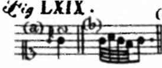
По своей сути группетто представляет собой короткую трель с нахшлагом
(выходом из трели). Иногда к группетто прибавляется еще одна нота той
же высоты, что и основная. В этом случае украшение играется с
основного звука, а не как трель – с секунды выше основного звука. Если
встречается подобная запись, группетто исполняется с акцентом на
первый звук, упругими пальцами, компактно и энергично. В быстрых
темпах и на коротких нотах данное украшение предпочтительнее описанной
ранее трели.
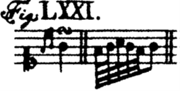
Встречается еще одна запись группетто – с двумя мелкими длительностями
перед основной нотой. В таком случае мелкие ноты связываются с самим
украшением. Как и все предыдущие разобранные украшения, группетто со
всеми дополнительными мелкими нотами исполняется за счет длительности
основной ноты и никогда за счет предыдущей ноты. Украшение также
должно звучать связно, то есть объединено лигой, даже если это
напрямую не указано в тексте.
4. Мордент
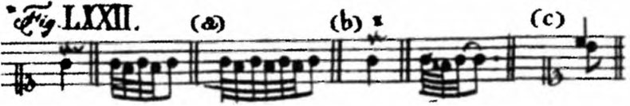
Обозначение мордента такое же, как и у трели, но с вертикальной чертой
посередине знака или вначале, в зависимости от предполагаемой длины
украшения. Здесь стоит напомнить, в классификации украшений К. Ф. Э.
Баха мордент встречается именно в таком перечеркнутом виде, и только в
таком. Мордент без вертикальной черты является по своей сути трелью,
короткой или длинной, и исполняется по тем же принципам, что и трель.
Предлагаю придерживаться этой же классификации и далее использовать
термин «мордент» только к мордентам с вертикальной перечеркивающей его
линией.
Мордент в самом распространенном виде представляет из себя трель,
состоящую из основного звука и звука на секунду ниже, количество
повторений данной фигуры зависит от выбора исполнителя или от
характера записи украшения в нотах. Короткий мордент может встречаться
над нотами любой длительности и в пьесах различного характера и темпа.
Длинный же мордент обычно используется над длинными нотами. Автор
трактата призывает исполнителей отказаться от способа исполнения
длинного мордента (который по звучанию напоминает трель) на всем
протяжении основной ноты, присоединяя мордент к следующей ноте. К. Ф.
Э. Бах считает такой способ непозволительным и неуместным, где бы он
ни использовался.
Существует еще один способ исполнения мордента, при котором мордент
состоит всего лишь из двух нот – основной и очень короткой нотой на
секунду ниже, основной звук при этом берется акцентировано и не
отпускается до следующей мелодической ноты. Такой способ уместен при
исполнении произведений чрезвычайно подвижного характера, когда
мордент оказывается на довольно коротких нотах. Особенно часто к
такому исполнению мордента приходится прибегать при исполнении на
фортепиано произведений, написанных для клавесина. Это связано с
гораздо большей легкостью и отзывчивостью клавиш клавесина в сравнении
с современными клавишными инструментами. Среди всех украшений мордент
(я естественно говорю о «перечеркнутом» морденте) наиболее часто
встречается в басовом голосе.
5. Аншлаг

Довольно необычное украшение и не очень часто встречающееся. Аншлагом
называется фигура, состоящая из мелких нот, если вместо основной ноты
берется сначала предыдущая, за ней нота на секунду выше основной и
затем уже основная. По своему строению аншлаг похож на форшлаг, он так
же исполняется за счет длительности основной ноты, к которой он
относится. Но есть принципиальное отличие – описанный ранее форшлаг
играется с большей опорой, чем следующая за ним основная нота. Аншлаг
же играется слабее, чем следующая за ним основная нота. Используя
данное украшение, исполнитель может хорошо связать мелодические звуки
между собой, а также заполнить мелодическую линию в случае большого
скачка между звуками мелодии. Аншлаг может использоваться и в
подвижных пьесах (в коротком своем исполнении), и в произведениях
более протяжного движения.
6. Шнеллер
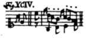
Шнеллер представляет собой короткий мордент, в обращении. Применяется
он только в подвижных пьесах, на коротких нотах, звучит довольно
акцентировано и придает блеск характеру пьесы. Обозначение и описание
этого украшения можно встретить только у К. Ф. Э. Баха. Так же он
указывает верное исполнение шнеллера – обязательно на сильную долю.
Исполнение на слабую долю было бы ошибочным, но довольно часто
встречается. По мнению композитора, шнеллер необходимо исполнять
весьма искусно, что требует тщательной проработки данного украшения. В
противном случае, лучше отказаться от использования шнеллера, особенно
в пьесах чрезвычайно подвижного характера.
7. Фермата
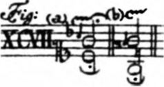
В заключении раздела об украшениях необходимо сказать о ферматах. Сама
фермата по своей сути не является украшением, но в определенных
случаях требует заполнения. Особенно в медленных пьесах автор трактата
подчеркивает необходимость украшения фермат, для привлечения еще
большего внимания к ноте или гармонии, попадающей под действие
ферматы. В качестве украшения для ферматы может быть выбран форшлаг,
плавно переходящий в трель, как в примере выше. Может использоваться и
просто длинный форшлаг, мордент. В трактате К. Ф. Э. Бах предлагает
также и некоторые варианты украшения фермат, представляющие собой
небольшие каденции:
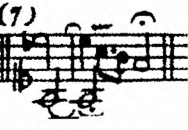
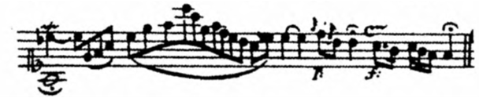
Полагаю, не всем очевидно, что в двух представленных фрагментах
нотного текста показаны два варианта каденции для одной и той же
ферматы в конце произведения. Здесь они приведены лишь для того, чтобы
читатель представлял, насколько свободным и варьированным могло быть
исполнение произведений времен К. Ф. Э. Баха при кажущейся строгости
письма и большом количестве правил исполнения отдельных элементов
музыкального языка – штрихов, динамики и украшений.
Фермата в произведении (чаще в подвижных Allegro) может встретиться и
на паузе. В таком случае она исполняется просто и естественно, без
украшений, как пауза.
Заключение
Работа с мелизмами (украшениями) – важная часть процесса обучения на
фортепиано. Произведения, требующие понимания обозначений украшений
представлены в педагогическом репертуаре довольно широко и занимают
немалую часть музыкального материала, который предстоит изучить
обучающимся в течение всего междисциплинарного курса «Дополнительный
инструмент – фортепиано». В основном это касается произведений
композиторов XVIII века, поскольку в последующие эпохи авторы
предоставляли исполнителям гораздо меньше свободы в прочтении нотного
текста, более тщательно выписывая украшения в нотном тексте и реже
обозначая их специальными знаками, требующими расшифровки. Нотные
редакции, использующиеся в процессе обучения, иногда дают
представление о том, где, каким образом и по какой причине необходимо
исполнить то или иное украшение. Но так происходит далеко не во всех
случаях, зачастую не учитываются традиции исполнительства XVIII века,
а накладываются традиции исполнения украшений более поздних эпох,
иногда даже просто опираясь на современных исполнителей. И во всех
случаях нотные редакции не дают полной картины для понимания законов и
принципов исполнительства того времени.
Начав изучать трактат К. Ф. Э. Баха на волне собственного интереса к
исторически информированному исполнительству, автор данной работы с
удивлением для себя обнаружил, что традиции исполнительства XVIII века
на клавишных инструментах совсем не противоречат современным
традициям, хотя сами инструменты того времени ощутимо отличающихся от
современных фортепиано. Очень многое из основ исполнительства К. Ф. Э.
Баха дошло до наших дней в педагогической практике, начиная от
постановки рук, аппликатуры и заканчивая деталями исполнения
украшений. В связи с этим автор данной работы убежден, что изучение
трактата К. Ф. Э. Баха отнюдь не уводит процесс обучения в сторону
исторически информированного исполнительства, а лишь обогащает и
структурирует знания обучающихся по предмету.
Несомненный авторитет К. Ф. Э. Баха может ощутимо облегчить процесс
донесения до обучающихся необходимых знаний о традициях
исполнительства, являющихся основами современной педагогической школы
и касающихся не только расшифровки украшений, но и исполнительства в
целом.
Список используемой литературы
-
Бах К.Ф.Э. Опыт истинного искусства клавирной игры. Перевод и
комментарии Юшкевич Е. Санкт-Петербург, 2005.
-
Бейшлаг А. Орнаментика в музыке. Москва,1978.
-
Захарова О. Риторика и западноевропейская музыка XVII – первой
половины XVIII веков. Москва,1983.
-
Куперен Ф. Искусство игры на клавесине. Москва, 1973.
-
Копчевский Н. Клавирная музыка: вопросы исполнения. Москва, 1986.
-
Музыкальная эстетика Западной Европы XVII-XVIII веков М.,1971.
-
Фишман Н. Эстетика К.Ф.Э. Баха. «Советская музыка» №8, 1964.
-
Юровский А. Филипп Эммануил Бах, его биография, фортепианное
творчество и система орнаментики. Москва, 1947.
-
Bach C.P.E. Autobiographical sketch. In: Burney C. Tagebuch einer
musikalischen Reise. Leipzig, 1975.
-
Mitchell W. J. Introduction B: C.P.E. Bach. Essay on the true
art of playing keyboard instruments. N-Y, 1949.
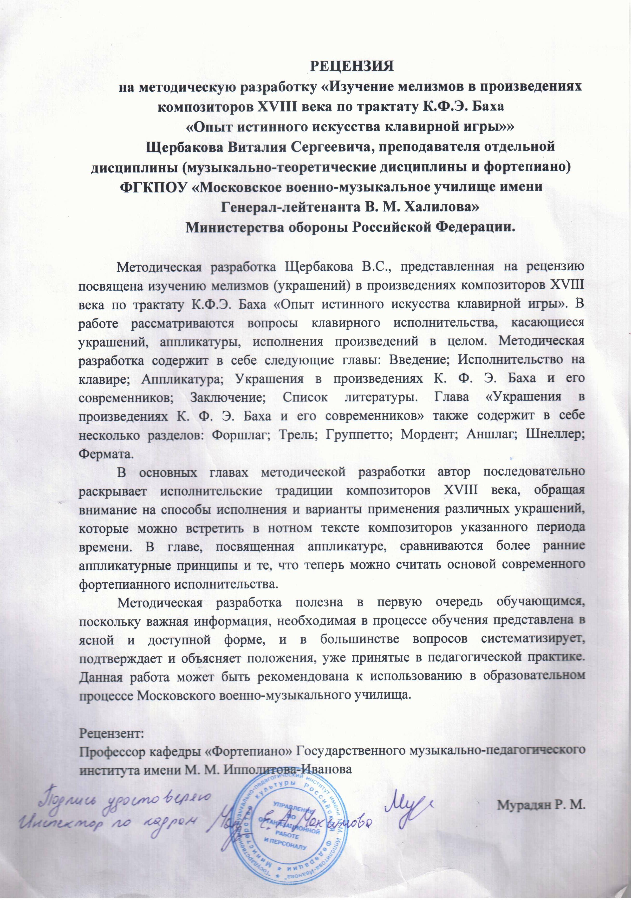